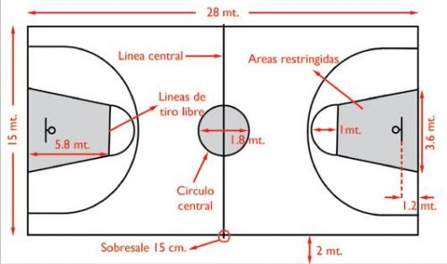

Elementos
Los elementos necesarios para jugar basquetbol son los siguientes:
Cancha
Las medidas estándar de la cancha de basquetbol son las siguientes:
* Cancha Internacional: 28 x 15 metros
* Cancha de la NBA: 28,65 x 15,24 metros.

Aro o canasta
El aro o canasta de basquetbol tiene las siguiente medidas:
* Posición en el campo: a 1,20 metros respecto del límite.
* Tablero del aro o canasta: 1,05 × 1,8 m, con al menos 30 mm de grosor, soportado en una estructura metálica anclada al suelo.
El tablero contiene el diseño de un rectángulo para calcular el tiro, cuyas medidas son 59 cm x 45 cm.
* Altura del aro: 3,05 metros.
* Diámetro del aro: 45 cm.
Balon
El balón varía según la categoría:
* Baloncesto masculino: número 7 A (73-25 cm;610-567 g);
* Baloncesto femenino: número 6 A (73-72 cm; 567-510 g);
* Baloncesto junior: número 5 A (70-69 cm; 510-470 g).
Indumentaria
* Camiseta ancha y larga.
* Pantalón corto hasta la rodilla.
* Zapatillas deportivas de caña alta, para proteger el tobillo de posibles lesiones, con cámaras de aire para proteger el pie durante el rebote y facilitar los saltos.